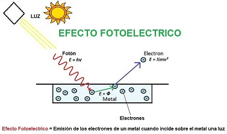
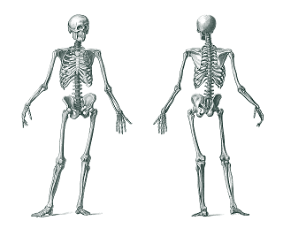
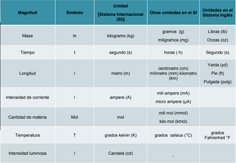
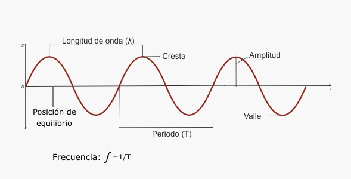
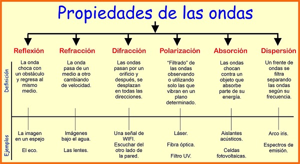
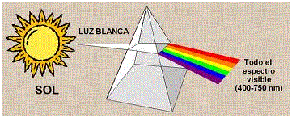

La Física y el método cientifico.
¿Qué significa ciencia? Proviene del latín scientia, "conocimiento".Es el conjunto de conocimientos obtenidos mediante la observación, razonamiento y la experimentación de ámbitos específicos, de los cuales se generan preguntas, hipótesis, se deducen principios y se elaboran leyes generales y sistemas organizados por medio de un método científico.
Método científico
El método científico es una serie de pasos para llevar a cabo una investigación, cuyos resultados sean aceptados como válidos para la comunidad cientifíca.Pasos del Método Cientifíco
- Observación
- Plnateamiento del Problema
- Hipótesis
- Experimentación
- Registro de datos
- Análisis e Interpretación
- Verificación de Hipótesis
La aplicacion del Método Cientifíco implica:
La Historia de la Física
Podemos establecer dos grandes etapas en el desarrollo de la Física, la primera se le conoce como Física Clásica y la segunda es la Física Moderna.A finales del siglo XIX se pensaba que se tenía un conocimiento completo del universo a traves de tres teorías de la Física Clásica.
Física Clásica
Newton y Maxwell fueron capacers de sintetizar el primero, todo el conociemiento adquirido a lo largo de ls siglos en el estuio del movimiento de los cuepros, tanto en la Tierra como en el resto del universo.El segundo, todo el conocimiento relativo a los fenómenos electromagneticos.
Figuras importantes como Galileo, Kepler, Copérnico, Pascal Frady, Coulomb. Fueron relevantes para la gestión de estas teorias.
En 1873 Maxwell presentaba cuatro ecuaciones que expresban de forma analítica el comportamiento de los campos electromagneticos.

Para determinar esas ecuaciones, Maxwell propuso un complejo modelo mecánico que explicaba cómo se propagaban las ondas den el éter.
Los físicos discutían con vehemencia las predicciones de Maxwell, hasta qu en 1888, Hertz logró generar las primeras ondas electromagnéticas.
Las ondas hertzianas eran de mayor frecuencia que la luz visible, pero tenian un comportamiento similar a ella
Desde ese momento la Óptica y el Electromagnetismo estarían unidos para siempre.
La influencia de la teoría de Maxwell era tan fuerte que, durante los útimos venticinco años del siglo XIX se habia acumulado evidencia experimental que los físicos, sin éxito, habían intentado explicar a través de las ecuaciones de Maxwell.
En 1877, dos años antes del nacimiento de Einstein, Hertz había descubierto el efecto fotoeléctrico: la capacidad de la luz ultravioleta de facilitar la descarga eléctrica entre dos electrodos.

En 1887, Michelson y Morley medían la velocidad de la luz, desde el referencial terrestre y el éter.
En 1897, Thomson determinó que los rayos catódicos tenían carga y masa.

En 1879 Stefan había determinado empíricamente que la energía irradiada por un cuerpo a temperatura dada, dependía de la cuarta potencia de la temperatura.
Física Moderna
La Física Moderna surge con la formulación de la hipótesis de los cuantos de Max Planck (1858-1947).
El 14 de diciembre de 1900, en la fiesta de fin de año de la Academia Prusiana de Física, Planck anunciaba su explicación al problema de la distribución de energía del espectro normal de calor irradiado.
Le siguen el descubrimiento de los rayos X por Wilhelm Roentgen (1845 – 1923), el estudio de la radiactividad natural por los esposos Curie y el efecto fotoeléctrico explicado por Albert Einstein (1913), mediante la hipótesis del cuanto de luz (fotón).
La nueva Física quedó formalizada mediante los enunciados de las teorías de la relatividad especial (1905) y general (1915) por Einstein y el modelo atómico de Niels Bohr (1913).
Con el descubrimiento de más de doscientas partículas elementales en la actualidad se trabaja en la Física Moderna para unificar las cuatro interacciones fundamentales conocidas: la gravitatoria, la débil, la fuerte y la electromagnética.
Inicio
Unidades y Medidas
El peso justo y la importancia de mantener un peso saludable
Es muy frecuente hallar tablas de peso ideal en libros y revistas, pero los pesos que allí se indican son sólo promedios estadísticos.La gran mayoría de los especialistas en nutrición consideran a la "complexión" como parámetro fundamental: el diámetro de los hombros, muy variable según cada persona, indica si es pequeña, mediana o grande.
Dentro de cada complexión se establece una gama, basada en el perímetro de la muñeca:
El perímetro de la muñeca que está cubierta por escasa grasa y músculo indica el espesor del esqueleto en general (esqueleto ligero, mediano o pesado).

En cuanto a la edad, se debe conservar el mismo peso a partir de los 25 años aproximadamente,con ligeros aumentos luego de la cuarta década.
El sexo es otro factor determinante del peso: el hombre tiene mayor desarrollo de masa ósea y muscular, y el músculo es mucho más pesado que el tejido graso. Es por ello que se han diseñado tablas de pesos teóricos para hombres y tablas para mujeres.

Unidades
Una unidad de medida es una cantidad estandarizada de una determinada magnitud física, definida y adoptada por convención o por ley. Cualquier valor de una cantidad física puede expresarse como un múltiplo de la unidad de medida.Sus unidades básicas son: el metro, el kilogramo, el segundo, el amperio, el kelvin, la candela y el mol.
Magnitudes
Propiedad de los cuerpos que puede ser medida, como el tamaño, el peso o la extensión.Una magnitud física es un concepto que representa una propiedad de algún objeto físico real o posible. Por ejemplo, la posición de una partícula y el tiempo que ella tarda en atravesar una distancia son magnitudes físicas.



👇Video de resolucion de un problema de una Conversion de unidades:👇
Inicio
Ondas
Definición y clasificación de las Ondas
Una onda tiene dos rasgos característicos.Primero, una onda es una perturbación que se propaga.
Segundo, una onda transporta energía, sin que haya transporte de materia.
Se puede definir que una onda es una perturbación que se propaga en un medio o en el espacio transportando energía.
Las ondas también pueden ser transversales o longitudinales.
Ondas Transversales
En el caso de las ondas transversales, el movimiento del medio es perpendicular a la dirección de la propagación de la onda.Ondas Longitudinales
Las ondas longitudinales son ondas en las que el desplazamiento a través del medio está en la misma dirección de desplazamiento de la onda, independiente del sentido
Características y propiedades de las ondas



Superposición de las ondas
La presencia de una perturbación ondulatoria en una región del espacio no excluye que otras perturbaciones puedan propagarse en la misma región.Es consecuencia de la linealidad de la ecuación diferencial de la onda y corresponde a uno de los posibles enunciados del principio de superposición.

Inicio
La Naturaleza de la Luz
Durante siglos se creyó que la luz consistía en un chorro de partículas emitidas por una fuente luminosa.Los demás cuerpos se veían debido a que se reflejan algunos de los corpúsculos que los golpean, y al llegar estas partículas al ojo, se producía la sensación de ver.
Esto explicaba la reflexión de la luz en un espejo.
Isaac Newton publica en 1704 su óptica y asienta el modelo corpuscular de la luz sobre las ideas de Descartes.
Supone que la luz está formada por corpúsculos materiales que son lanzados a gran velocidad por los cuerpos emisores de luz.
Este modelo explica y se basa en:
Modelos ondulatorios
Modelo ondulatorio de Huygens
En 1690 publicó su teoría sobre la propagación de la luz como un movimiento ondulatorio que necesitaba de un medio material llamado “éter”, para propagarse.La discusión entre el modelo corpuscular de Newton y el ondulatorio de Huygens fue ganada por Newton en un primer momento debido a su mayor prestigio y fama como científico y a que los experimentos que se conocían en aquella época apoyaban a Newton.
Acustica
La acústica es una rama de la física interdisciplinaria que estudia el sonido, infrasonido y ultrasonido, es decir ondas mecánicas que se propagan a través de la materia, tanto sólida como líquida o gaseosa por medio de modelos físicos y matemáticos.Optica
La óptica es la rama de la física que involucra el estudio del comportamiento y las propiedades de la luz, incluidas sus interacciones con la materia, así como la construcción de instrumentos que se sirven de ella o la detectan.
Inicio